OpenPallet to otwarty format wymiany danych paletyzacji: jeden plik JSON opisuje paletę, produkt,
przekładki, warstwy i każdy ruch robota.
Plik OpenPallet 1.2 ma znacznik "format": {"name": "OpenPallet", "version": "1.2"},
wszystkie położenia w jednym układzie palety, a każdą orientację i każdy kierunek w stopniach w lewo od góry
rysunku.
Te same wartości mają stały zapis dla sterownika i robota (struktura PLC, CSV), więc program PLC
i robota czyta to, co widać na rysunku.
Każdy element stanowiska ma własny układ i pozycję normalną. Plik podaje orientacje i położenia względem pozycji normalnej: transportera przy pobraniu, palety przy odłożeniu, jakkolwiek stoją na stanowisku. Układ palety: X w dół rysunku wzdłuż długości (pallet.length), Y w prawo wzdłuż szerokości (pallet.width), Z w górę.
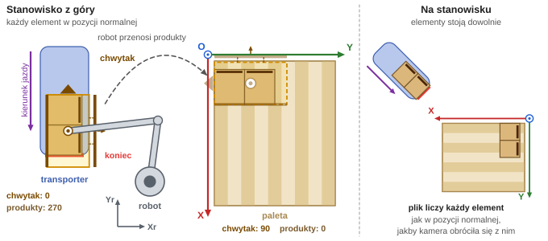
Przykład: Produkt A, warstwa unikalna 1, ruch 1.
Symbol
Element
Robot. Swój układ (Xr, Yr) ustawia integrator. Program robota umieszcza w nim paletę i transporter.
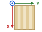
Paleta. Początek O w rogu, X wzdłuż długości (także gdy paleta jest szersza niż dłuższa), Y wzdłuż szerokości, Z w górę od desek.
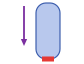
Transporter. Kierunek jazdy w dół rysunku, koniec transportera (czerwona linia) na dole.
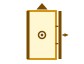
Chwytak w orientacji 0. Trójkąt: przód. Ciemne belki: strony 90 i 270. Koło: kołnierz robota.
Kompas: kierunki co 45 stopni, liczby rosną w lewo.
Kierunek
Na rysunku
Wektor (X, Y)
0
góra
(−1, 0)
45
góra-lewo
(−1, −1)
90
lewo
(0, −1)
135
dół-lewo
(+1, −1)
180
dół
(+1, 0)
225
dół-prawo
(+1, +1)
270
prawo
(0, +1)
315
góra-prawo
(−1, +1)
900
prosto z góry
(0, 0)
Orientacja (0, 90, 180, 270): strona, w którą patrzy przód elementu. 0 to pozycja normalna: produkt stoi
tak, jak dojeżdża do końca transportera bez obrotów, chwytak tak, jak najczęściej pobiera.
Plik podaje tylko orientacje. Jak obrócić chwytak, żeby je bezpiecznie osiągnąć, decyduje program robota.
Kierunek (kompas): kierunek odłożenia produktów w układzie palety. 900 = wartość neutralna: prosto
z góry (karta 5), bez strony otwarcia oraz środek (karta 4). 999 = nieprzypisane.
Ruch (moves[]): produkty, które chwytak bierze i odkłada naraz. Z liczy się od desek palety (karta 6).
2
Orientacja
OpenPallet 1.2
Orientacja to strona, w którą patrzy przód elementu (ściana 0 produktu, przód chwytaka) w układzie, w którym leży: 0, 90, 180 albo 270, jak na kompasie. Orientacja 0 to pozycja normalna.
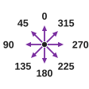
Produkt w pozycji normalnej (orientacja 0) stoi tak, jak dojeżdża do końca transportera bez obrotów: długość wzdłuż
X, ściana 0 u góry rysunku.
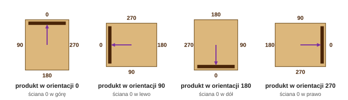
Liczby przy ścianach: numery ścian. Ciemny pasek: ściana 0.
produkty przy pobraniu → chwytak pobiera → chwytak odkłada → produkty na palecie
Krok
Pole w pliku
Układ
przykład 1
przykład 2
produkty przy pobraniu
products_at_pick[k].orientation
transportera
270
90
chwytak pobiera
gripper_pick_orientation
transportera
0
0
chwytak odkłada
gripper_place_orientation
palety
90
90
produkty na palecie
products[].orientation
palety
0
180
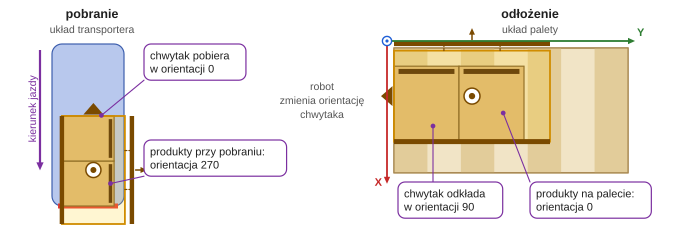
Na rysunku przykład 1: Produkt A, warstwa unikalna 1, ruch 1. Przykład 2 to ruch 4 z warstwy unikalnej 2.
Produkt obraca się razem z chwytakiem. Plik podaje wszystkie cztery orientacje ruchu: nic nie trzeba liczyć.
Sterownik (PLC) dostaje orientacje przy pobraniu i obie orientacje chwytaka. Orientacji na palecie nie potrzebuje:
produkty leżą tak, jak odłożył je chwytak.
Ściany z etykietą (label_sides typu produktu) są podane w pozycji normalnej, Produkt A: [270].
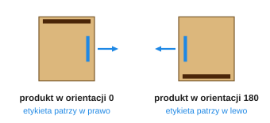
Etykieta Produktu A (ściana 270) obraca się razem z produktem.
3
Chwytak
OpenPallet 1.2
Chwytak w orientacji 0 stoi długością wzdłuż X, przodem (trójkąt) do góry rysunku. Przy pobraniu jego orientacja liczy się w układzie transportera, przy odłożeniu w układzie palety.
Orientację 0 chwytaka zalecamy przyjąć tak, jak chwytak najczęściej pobiera produkty z transportera. Plik podaje obrys
otwartego chwytaka, niezależnie od jego rodzaju: przy chwytaku szczękowym to obrys przy maksymalnie otwartych
szczękach. Obrys jest zwykle większy od pobieranych produktów. Strona otwarcia (90 albo 270, karta 4) musi być
wolna przy odkładaniu: przy chwytaku szczękowym to strona ruchomej szczęki, przy grabiowym strona, od której
wsuwają się grabie.
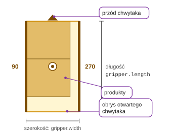
Chwytak w orientacji 0. Obrys otwartego chwytaka w mm: długość wzdłuż, szerokość w poprzek.
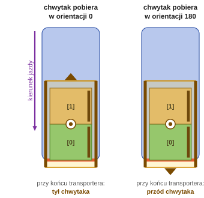
Transporter: kierunek jazdy w dół rysunku, koniec na dole. [0]: produkt przy końcu transportera.
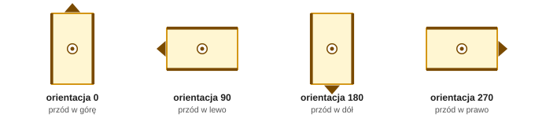
Przy odłożeniu chwytak może stać w każdej z czterech orientacji w układzie palety.
Orientacja chwytaka przy pobraniu (gripper_pick_orientation): 0 albo 180, w układzie transportera.
Orientacja chwytaka przy odłożeniu (gripper_place_orientation): 0, 90, 180 albo 270, w układzie palety.
Produkty przy pobraniu (products_at_pick): produkty w kolejności dojazdu do końca transportera, każdy z numerem
produktu (product_id) i orientacją przy pobraniu (orientation). [0] to produkt przy końcu transportera,
dalej kolejne od końca.
W orientacji 0 przy końcu transportera leży tył chwytaka, w orientacji 180 jego przód.
Dozwolone orientacje chwytaka przy pobraniu (gripper.allowed_pick_orientation) i przy odłożeniu
(gripper.allowed_place_orientation) to ustawienia stanowiska.
4
Strona otwarcia i wyrównanie
OpenPallet 1.2
Strona otwarcia (90 albo 270) to strona chwytaka, która zostaje wolna: przeciwną stroną chwytak dostawia produkty do już odłożonych. Wyrównanie (0, 180, 900) mówi, przy którym końcu chwytaka leżą produkty. Oba należą do chwytaka i liczą się w jego układzie.
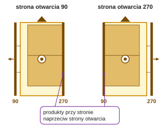
Chwytak w orientacji 0. Strzałka: strona otwarcia.
Strona otwarcia (gripper_open_side): 90 albo 270. Przy stronie otwarcia 270 produkty leżą przy stronie 90 i tą
stroną chwytak dostawia je do już odłożonych. Strona 270 zostaje wolna, chyba że ustawienia stanowiska
mówią inaczej.
Chwytak szczękowy: strona ruchomej szczęki. Grabiowy: strona, z której najeżdżają grabie. Inny: strona z
elementami, które mogą wejść w kolizję z sąsiednimi produktami.
Gdy ruchome są obie strony, stanowisko dopuszcza obie (gripper.allowed_open_side).
900: chwytak bez strony otwarcia (od góry). 999: nieprzypisane.
Wyrównanie (gripper_align): 0 = produkty przy przodzie chwytaka, 180 = przy tyle, 900 = na środku.
900 nie jest kierunkiem: w wyrównaniu znaczy chwytak na środku względem produktów.
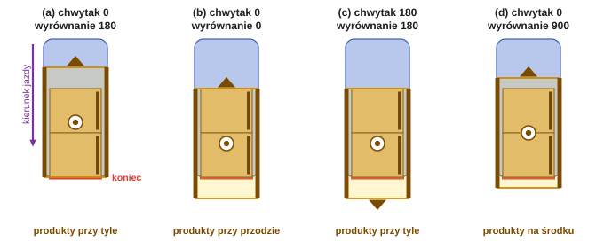
Wyrównanie przy pobraniu. Przód chwytaka to trójkąt, tył to koniec naprzeciw.
JSON
PLC (tPlacingData, dane ruchu)
kolumna CSV
strona otwarcia
gripper_open_side: 90, 270, 900
i16GripperOpenSide: 90, 270, 900
GripperOpenSide
wyrównanie
gripper_align: 0, 180, 900
i16GripperAlign: 0, 180, 900
GripperAlign
5
Kierunek odłożenia
OpenPallet 1.2
Kierunek odłożenia to kierunek, w którym chwytak z produktami jedzie w ostatniej fazie dojazdu do pozycji odłożenia, liczony w układzie palety. 900 oznacza odłożenie prosto z góry.
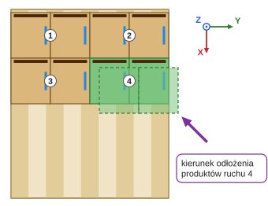
Produkt A, warstwa unikalna 1, ruch 4: kierunek odłożenia 45, produkty dojeżdżają do ruchów 2 i 3.
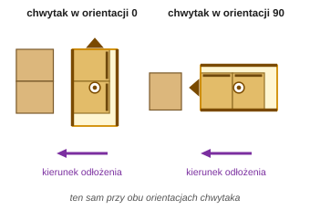
Kierunek odłożenia 90: chwytak dostawia produkty w lewo, do już odłożonych. Liczy się w układzie palety, więc jest ten sam przy każdej orientacji chwytaka.
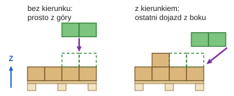
Widok z boku.
900: prosto z góry, bez dojazdu z boku. 999: nieprzypisane.
Wysokość i długość dojazdu ustawia program robota: plik podaje tylko kierunek.
JSON
PLC (tPlacingData, dane ruchu)
kolumna CSV
kierunek odłożenia
placing_direction: 0, 45, 90, … 315
i16PlacingDirection: 0, 45, … 315
PlacingDirection
prosto z góry
900
900
900
6
Stos i przekładki
OpenPallet 1.2
Stos (stack) układa warstwy od palety w górę, każdą z przekładką albo bez. Z liczy się od desek palety, więc wysokość pustej palety (pallet.height) robot dodaje sam.
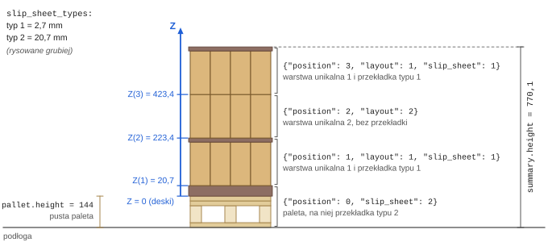
Przykład: dwa typy przekładek, trzy warstwy, wysokość produktu 200 mm. Z w mm od desek palety.
Z(K) = (K − 1) × wysokość produktu + grubości przekładek pod warstwą K
summary.height = pallet.height + warstwy + wszystkie przekładki
Inna wysokość palety zmienia tylko pallet.height i summary.height. Z warstw zostaje, bo liczy się od desek.
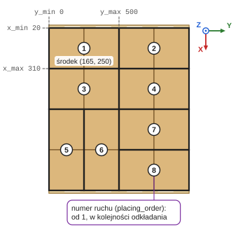
Produkt A, warstwa unikalna 1: ruchy i obwiednia ruchu 1 (prostokąt wokół jego produktów).
Przekładka (slip sheet): arkusz na palecie, między warstwami albo na wierzchu.
Pozycja stosu wskazuje warstwę unikalną (layout = id z layouts) i przekładkę leżącą na niej (slip_sheet =
id z slip_sheet_types). Brak slip_sheet: bez przekładki.
Typ przekładki (slip_sheet_types, do 10 typów) ma tylko grubość (thickness): o ile przekładka podnosi następną
warstwę. Wymiary i materiał ustala integrator.
Warstwa unikalna (layouts[]): układ warstwy zapisany raz. Stos używa go w wielu warstwach palety.
Produkt w ruchu (products[]): x, y = róg o mniejszym X i Y, size_x, size_y = wymiar wzdłuż X i Y.
Środek ruchu dla PLC (tPlacingData) to liczby całkowite: trunc ucina część po przecinku.
Plik OpenPallet to JSON. Klucze najwyższego poziomu mają stałą kolejność, a to, co do siebie należy, leży w nich zagnieżdżone: ruchy w warstwie unikalnej, produkty w ruchu.
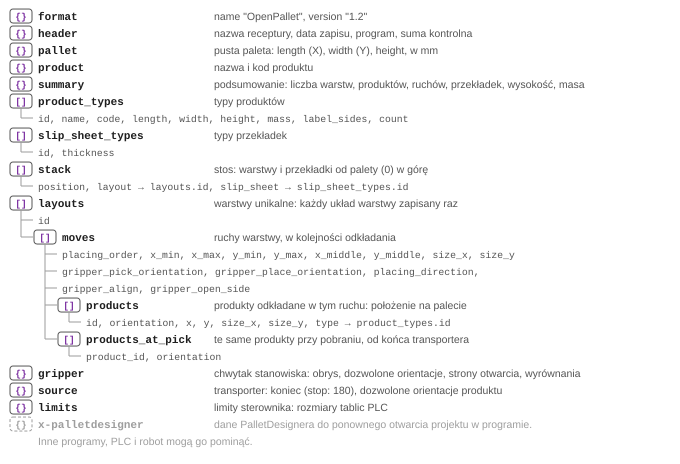
Struktura pliku w kolejności zapisu. { }: obiekt, [ ]: lista, szary wiersz: pola każdego elementu listy.
Rozpoznanie:format.name = "OpenPallet" i format.version 1.2 albo późniejsze 1.x: czytaj. Inna nazwa
albo wersja: odrzuć. Nieznane klucze pomijaj.
Kolejne wersje 1.x dodają tylko pola nieobowiązkowe: program, który czyta 1.2, przeczyta każdy późniejszy plik 1.x.
Jednostki: położenia i wymiary w mm, masa w g, orientacje i kierunki w stopniach (liczby całkowite). Grubość
przekładki i summary.height w mm z jednym miejscem po przecinku.
Paleta bez miksu (summary.mix false): jeden typ produktu, id 1, a produkty w ruchach nie mają pola type.
Suma kontrolna (header.checksum): CRC-32 (8 znaków hex) z JSON-u bez niej, klucze posortowane, bez spacji,
znaki spoza ASCII jako \uXXXX, liczby całkowite bez .0.